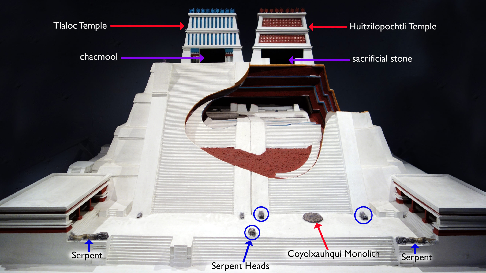

Photo credit: https://www.britannica.com/topic/Aztec-religion
The Aztecs had a patron deity unique to them, Huiztilopochtli. This was their main god that they worship, the one who ordered the Mexica to leave Aztlan to find a new permanent homeland and told them that the sign of an eagle eating a snake on a cactus would mean that they had found their new homeland. The Digital Florentine Codex is translated to describe Huiztilopochtli as the following:
This god named Huiztilopochtli was another Hercules who was extraordinarily robust, of great strength, and very bellicose, a great destroyer of towns and slayer of peoples. In war, he was like a living fire, very frightful to his opponents; thus, the emblem that he carried was a very frightening dragon’s head that spewed fire through its mouth. He was also a sorcerer or trickster, who transformed himself into the shapes of various birds and beasts. (Sahagún, 1r)
The Aztecs built Templo Mayor in the center of their city, Tenochtitlan. Huiztilopochtli was dedicated to one of the dual temples of Templo Mayor where they offered slaves to him and sacrificed those who they captured in their warfare with neighboring villages. His side of the temple was painted red, representing the blood of the sacrifices.
Photo credit: https://www.flickr.com/photos/profzucker/16928570889/
The other god that Templo Mayor was dedicated to was Tlaloc Tlamacazqui who was the god of rain. They worshipped him so their crops would be able to get the rain and water needed to grow for harvest season. His side of the temple was painted blue to represent the rain they believed Tlaloc provided. The Digital Florentine Codex described the festival for Tlaloc as the following:
They called the third month Tozoztontli. On the first day of the month, they would celebrate a festival for the god called Tlaloc, who is the god of rain. They would kill many children upon the mountains during this festival. They would offer them as a sacrifice to this god and to his companions, so that they would give them water. (4r; bk. 2)